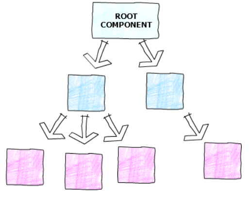

说说React render方法的原理？在什么时候会被触发？
参考答案
一、原理
首先，render函数在react中有两种形式：
在类组件中，指的是render方法：
class Foo extends React.Component {
render() {
return <h1> Foo </h1>;
}
}在函数组件中，指的是函数组件本身：
function Foo() {
return <h1> Foo </h1>;
}在render中，我们会编写jsx，jsx通过babel编译后就会转化成我们熟悉的js格式，如下：
return (
<div className='cn'>
<Header> hello </Header>
<div> start </div>
Right Reserve
</div>
)babel编译后：
return (
React.createElement(
'div',
{
className : 'cn'
},
React.createElement(
Header,
null,
'hello'
),
React.createElement(
'div',
null,
'start'
),
'Right Reserve'
)
)从名字上来看，createElement方法用来创建元素的。
在react中，这个元素就是虚拟DOM树的节点，接收三个参数：
- type：标签
- attributes：标签属性，若无则为null
- children：标签的子节点
这些虚拟DOM树最终会渲染成真实DOM
在render过程中，React 将新调用的 render 函数返回的树与旧版本的树进行比较，这一步是决定如何更新 DOM 的必要步骤，然后进行 diff 比较，更新 DOM 树
二、触发时机
render的执行时机主要分成了两部分：
- 类组件调用 setState 修改状态
class Foo extends React.Component {
state = { count: 0 };
increment = () => {
const { count } = this.state;
const newCount = count < 10 ? count + 1 : count;
this.setState({ count: newCount });
};
render() {
const { count } = this.state;
console.log("Foo render");
return (
<div>
<h1> {count} </h1>
<button onClick={this.increment}>Increment</button>
</div>
);
}
}点击按钮，则调用setState方法，无论count是否发生变化，控制台都会输出Foo render，这就证明render执行了
- 函数组件通过
useState hook修改状态
function Foo() {
const [count, setCount] = useState(0);
function increment() {
const newCount = count < 10 ? count + 1 : count;
setCount(newCount);
}
console.log("Foo render");
return (
<div>
<h1> {count} </h1>
<button onClick={increment}>Increment</button>
</div>
);
}函数组件通过useState这种形式更新数据，当数组的值不发生改变了，就不会触发render
- 类组件重新渲染
class App extends React.Component {
state = { name: "App" };
render() {
return (
<div className="App">
<Foo />
<button onClick={() => this.setState({ name: "App" })}>
Change name
</button>
</div>
);
}
}
function Foo() {
console.log("Foo render");
return (
<div>
<h1> Foo </h1>
</div>
);
}只要点击了 App 组件内的 Change name 按钮，不管 Foo 具体实现是什么，都会被重新render渲染
- 函数组件重新渲染
function App(){
const [name,setName] = useState('App')
return (
<div className="App">
<Foo />
<button onClick={() => setName("aaa")}>
{ name }
</button>
</div>
)
}
function Foo() {
console.log("Foo render");
return (
<div>
<h1> Foo </h1>
</div>
);
}可以发现，使用useState来更新状态的时候，只有首次会触发Foo render，后面并不会导致Foo render
三、总结
render函数里面可以编写JSX，转化成createElement这种形式，用于生成虚拟DOM，最终转化成真实DOM
在 React 中，类组件只要执行了 setState 方法，就一定会触发 render 函数执行，函数组件使用useState更改状态不一定导致重新render
组件的 props 改变了，不一定触发 render 函数的执行，但是如果 props 的值来自于父组件或者祖先组件的 state
在这种情况下，父组件或者祖先组件的 state 发生了改变，就会导致子组件的重新渲染
所以，一旦执行了setState就会执行render方法，useState 会判断当前值有无发生改变确定是否执行render方法，一旦父组件发生渲染，子组件也会渲染
